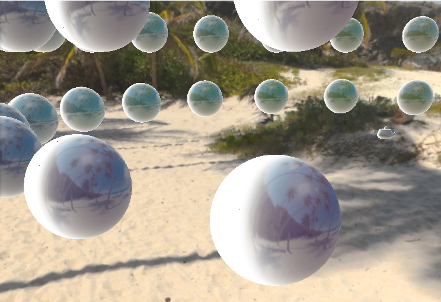

PORTFOLIO
Dylan Washburne
Sample Works
3D Environment Engine
Created a high-fidelity rendering environment by augmenting and enhancing my custom-built 3d rendering architecture. This has also been used for each of my MS CS classes, for technical demonstrations and general programming.
The basis of this environment is a custom-built C++ program making heavy use of OpenGL. This environment was initially constructed as I began my Master's degree, and has been augmented and improved continuously to reach this point.
The most notable technology contained in this environment include:
- Deferred Shading (allowing for thousands of local lights at a trivial processing cost)
- Volumetric Lighting
- Geometry Shader-blurred shadows
- Reflections
- Physically-based rendering
- Image-based lighting


The following image demonstrates a collection of more advanced technologies utilized. In it, there exists a sphere of spheres surrounding a Utah Teapot in the center. All the rendered objects display volumetric lighting, image-based lighting, and reflections.
Animation and Physics Engine
OpenGL foundation. Takes the foundation of my prior MS CS 3D environment, and expands its scope in the following ways:
- Extensive debug
- Asset importing
- Skeleton rigging
- Animation support and state machine
- Path generation and traversal
- Inverse kinematics
- Physics simulations

ConCaveity
Made for MS CS Master's Game Project at DigiPen, modifying my personal game engine in a 4-man group. Implements platforming and several art enhancements to create a feature-length stealth game.
Excessively Buff
Made for the GMTK Game Jam 2020, a 48 hour game jam where I had to conceptualize, build, and release a game adhering to the theme "out of control".
The title is because, as the game progresses, the player recieves multiple empowerments, commonly referred to as "buffs." As they reach the endgame, the player will have greatly increased their speed and strength. However, the final boss is designed with precision navigation as a requirement to beat it. This ties in with the theme of the game jam, "out of control", because the player will be zooming all around due to upgrade choices they personally selected.